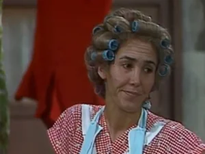

Dona Florinda

Intérprete: Florinda Meza
Dubladores: Marta Volpiani
Nome completo: Florinda Corcuera y Villalpando, Viúva de Matalascallando
Caracterização: É uma mulher apenas entrando na meia idade, porém já tem marcadas linhas de expressão, tem o cabelo loiro e sempre o leva suspendidos por bobes, sua intenção é arrumar lindamente seu cabelo, porém pelo muito do que fazer ao dia, nunca tira os rolos. É chamada desrespeitosamente de “Velha Carcomida” ou “Velha Coroca”, todavia, muitas vezes merece tal vocativo.
Vestuário: Vestido com flores sobre quadrinhos rosa, avental, sapatos abertos de salto altos e largos.
Acessórios: Bobes para o cabelo, roupa para lavar, vassoura e utensílios das múltiplas e inesgotáveis tarefas do lar, como por exemplo a lavadora de roletes.
Personalidade: Crê-se que Dona Florinda é viúva, já que disse que seu marido, Frederico, que era marinheiro, sofreu um naufrágio em alto mar, e que depois daí nunca mais voltou a vê-lo. Dona Florinda é uma mulher restrita, amante da ordem, limpeza e disciplina. Tem pouca paciência e gênio difícil, capaz de mudar num instante para a doçura e serenidade perante as lindezas de seu filho Quico e a presença do Professor Girafales, seu novo grande amor. Tem ares de grandeza que ainda lhe caem como único vestígio de uma juventude burguesa de que fala às vezes, porém sem poder, se vê resignada em viver com a “gentalha”, pois vive apenas da pensão de seu falecido marido.
Girafales sempre visita Florinda na vila, levando um buquê de flores como presente. Em retribuição, Florinda lhe oferece uma xícara de café. E assim vai indo. A “valentona do quatorze” também é proprietária de um botequim, digo, restaurante.
Bordões: “Vamos, Tesouro, não se misture com essa gentalha”